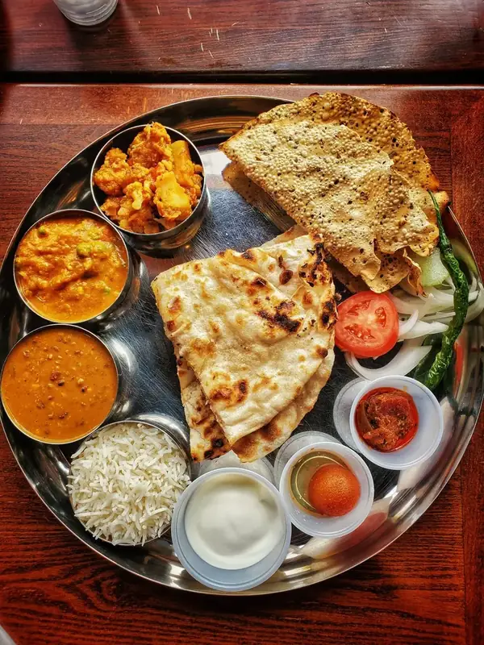
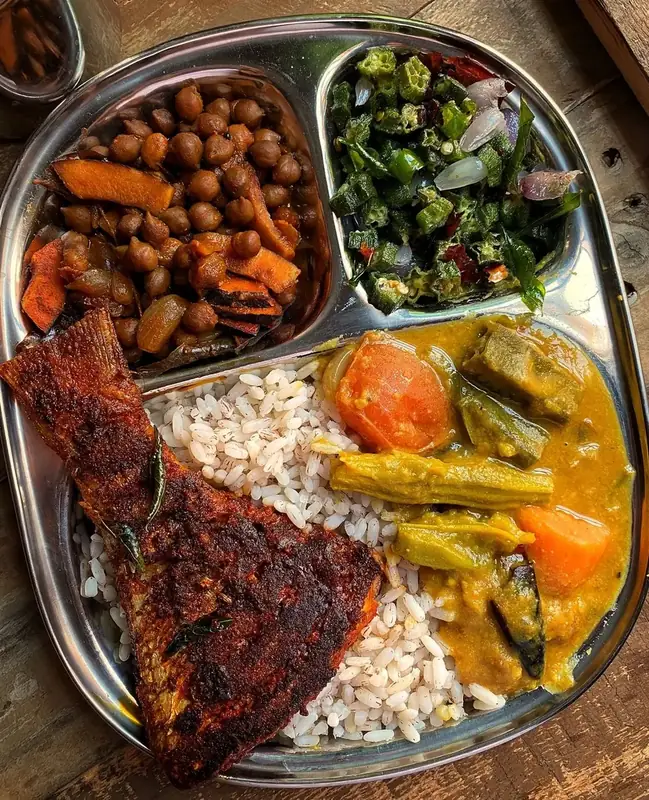
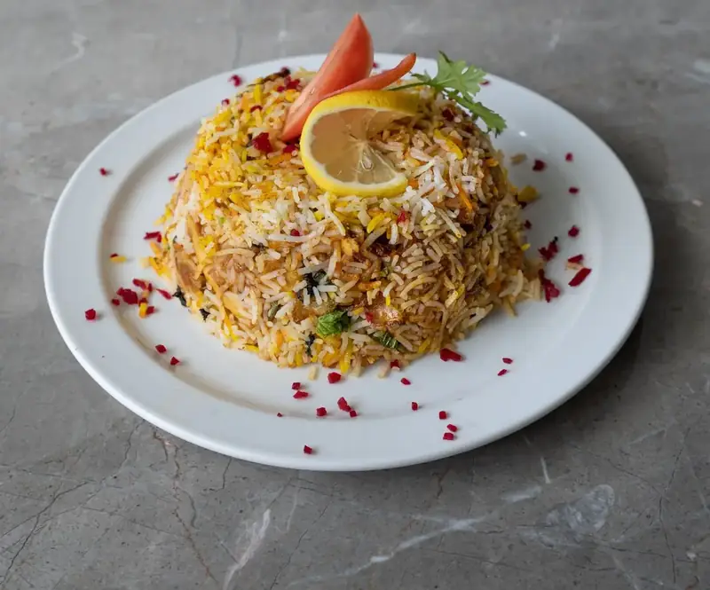
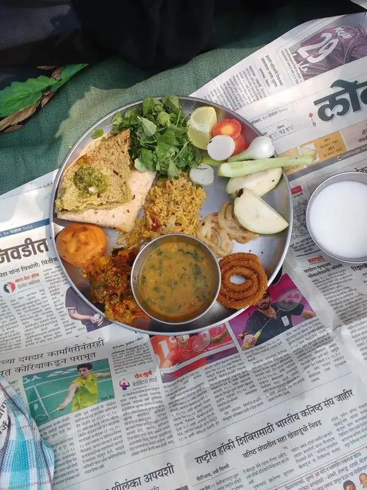
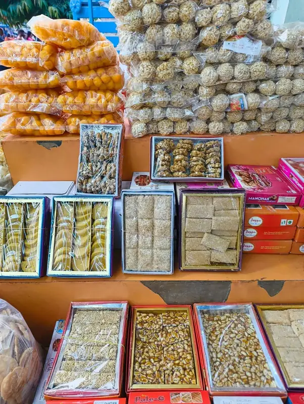
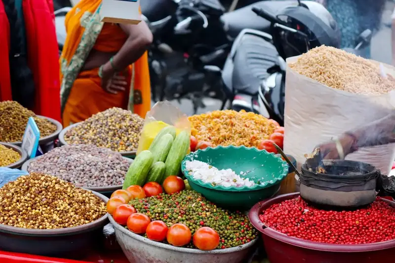

Philosophy
Why we only serve lunch
One meal, made with full attention. The economics of doing one thing right every day, and what we learned when we briefly considered dinner service.
Heritage, season, and the occasional recipe we dare to share. Updated when the kitchen has something worth saying.





